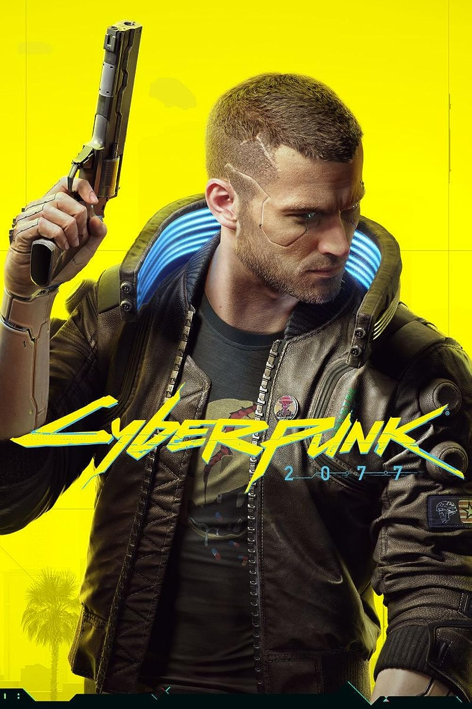
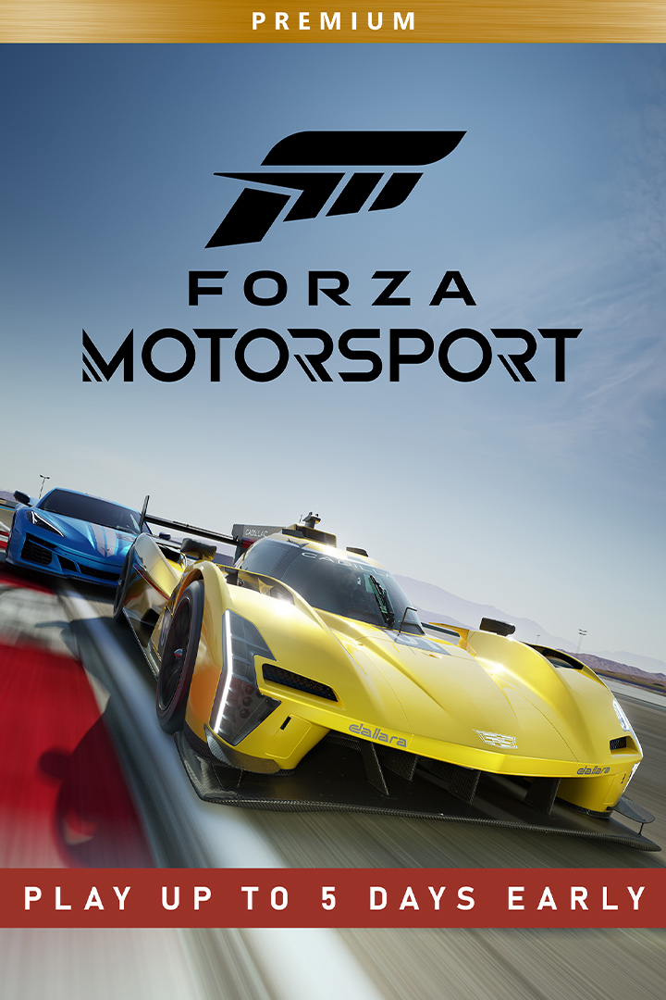
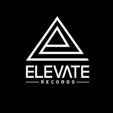
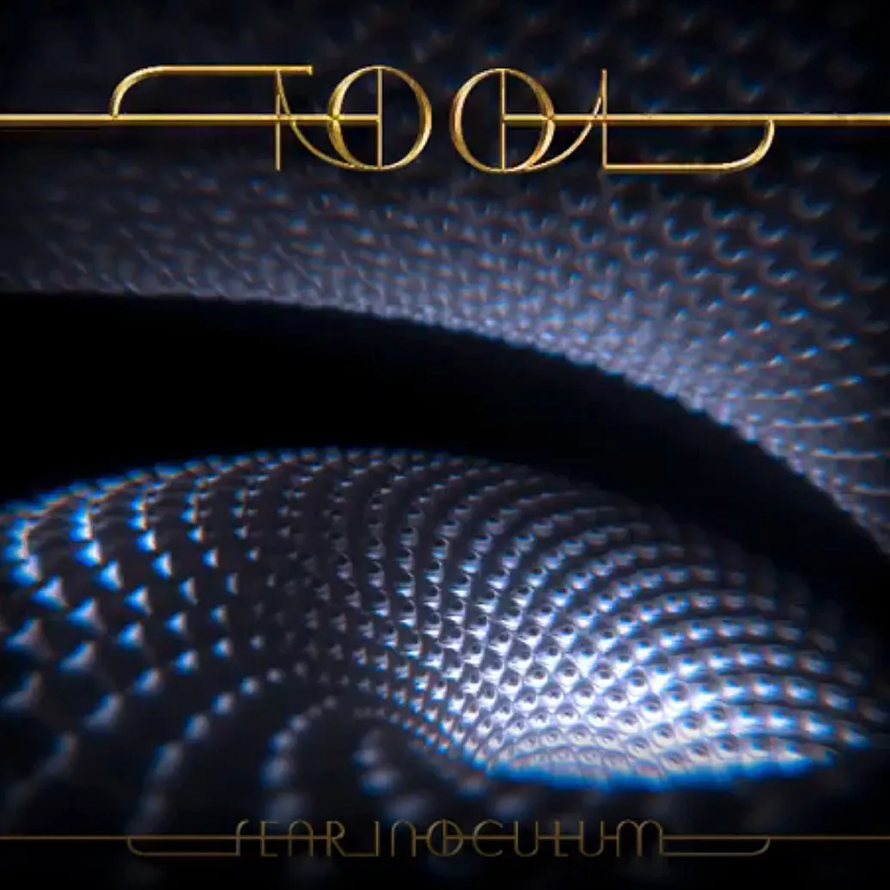
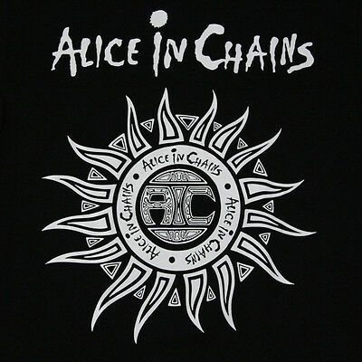

Cyberpunk 2077

Julkaisun vaiheessa peli oli suoraan sanoen rikki, nyt Cyberpunk 2077 on viimeistelty ja toimii niin kuin sen olisi pitänyt alkuvaiheessa.
Pelasin sen läpi julkaistaessa, mutta nyt ostin lisäosan siihen ja pelaan uudestaan. Tällä pelikerralla luon erilaisen
hahmon, joka keskittyy tarkkuuskivääreihin ja pistooleihin. Pelissä on mielestäni hyvä ja mukaansatempaava tarina, mutta mikäli haluaa aivotonta
ajanvietettä, soveltuu peli myös siihen.
Lue lisää
Forza Motorsport

Mukavaa ajanvietettä, mutta melko stressaavaa nopean temmon vuoksi. Mikäli haastaa itseään ja nostaa vastustajien tasoa,
saa kokoaika keskittyä 100 prosenttisesti.
Edeltävä Forza Horizon 5 oli visuaalisesti hienommin toteutettu ja avoimen maailman takia myös rentouttavampi.
Tässä pelissä vielä hieman paranneltavaa päivityksillä. Siitä huolimatta olen pelannut peliä paljon ja kehittynyt.
Lue lisää
Elden Ring

Tätä peliä olen ajallisesti pelannut aikuisiällä enemmän kuin mitään muuta peliä aikuisiälläni. Avoimen maailman fantasiaroolipeli, m
issä kehitetään hahmoa haluamallansa tavalla. Pelissä on tuotantotalo Fromsoftwaren tuttuun tapaan hyvin haastavia vihollisia ja vankityrmiä.
From Software on tuttu Dark Souls- sarjasta, mistä taas Elden Ring eroaa muun muassa avoimen maailman takia.
Lue lisää
Drum N Bass

Yleisin musiikkigenre, mitä kuunnellut jos olen juhlatuulella tai muuten vain hyvällä tuulella. Suosikkikappaleeni ovat
yleensä joko hyvin raskaita, tai joissa on minua syvästi koskettava melodia/tunnelma.
Tästähän löytyy vielä ala-genrejä paljon, suosikkini järjestyksessä:
- Dancefloor (Metrik, Kanine, Pendulum)
- Jump Up (Hedex,Bou)
- Liquid (Seba, Blu Mar Ten)
Lue lisää
Tool

Tämän syksyn eniten kuunnelluin artisti. Monet, jotka tietävät kyseisen bändin, ovat henkeen ja vereen faneja.
Isoveljeni lukeutuu näihin, olin kuullut artistista jo nuorena, mutta vasta nyt löysin heidät uudestaan. Uusin albumi "Fear Inoculum" todella sykäyttävä.
Tässä muutama lempikappaleeni uudelta albumilta:
Lue lisää
Alice in Chains

Ikinä ei voi mennä metsään Alice in Chainssilla. Hauskaa tässä on se, että aloin alun perin kuunnella yhtyettä uusilla albumeilla,
enkä edes tiennyt 90-luvun mestariteoksia. Kun löysin kaksi ensimmäistä albumia tämän jälkeen, huomasin mistä olin jäänyt paitsi.
Fun fact, nyt minulla on kahdesta ensimmäisesta albumista bändipaidat.
Lue lisää
Opiskelu on lähtenyt mukavasti liikenteeseen ja ensimmäinen maaliviiva häämöttää jo. Ehdottomasti mieluisin kurssi on ollut Verkkosivujen
kehittäminen. Lähtötilanteeni oli täysin nolla, joten koen olevani kehittynyt jo mukavasti. Bootstrappi tuotti vaikeuksia aluksi, mutta sekin
alkaa luonnostumaan, kunhan älysi perusidean.